MOVING FORTH 3
Part 3: Demystifying DOES> \ by Brad Rodriguez
This article first appeared in The Computer Journal #62 (July/August 1993).
OOPS!
There's a colossal mistake in one of my 6809 design decisions in the previous installment. It became evident when I started to code the Forth word EXECUTE.
EXECUTE causes the execution of a single Forth word, whose address is given on the Parameter Stack. (To be precise: the compilation address, a.k.a. Code Field Address, is given on the stack.) This can be any kind of Forth word: CODE definition, colon definition, CONSTANT, VARIABLE, or defined word. This differs from the usual Forth interpretation process in that the address of the word-to-execute is given on the stack, and not taken from the "thread" (as pointed to by IP).
In our direct-threaded 6809 code this can be easily coded:
EXECUTE: TFR TOS,W put address of word in W
PULU TOS pop new TOS
JMP ,W jump to address given in W
Note: this is JMP ,W and not JMP [,W], since we already have the code address of the word. We're not fetching from the high-level thread. (If TOS wasn't in register, EXECUTE could be done with simply JMP [,PSP++].) Now suppose that this EXECUTEd word is a colon definition. W will be pointing to its Code Field, which contains JMP ENTER. This does the following (described in the previous article):
JMP ENTER
...
ENTER: PSHS IP
LDX -2,IP re-fetch the Code Field address
LEAY 3,X
NEXT
This is the mistake! We are not executing this word from within a thread, so IP was not pointing to a copy of its Code Field address! (Remember, the address of the word-to-EXECUTE came from the stack.) This form of ENTER will not work with EXECUTE, because there is no way to find the address of the word being executed!
This suggests a new general rule for DTC Forths: if NEXT does NOT leave the address of the word-being-executed in a register, you MUST use a Call in the code field.
So, the 6809 Forth is back to using a JSR in the Code Field. But to avoid the speed penalty for ENTER -- one of the most-used code fragments in Forth -- I'll complete the "exercise for the student" from the last article. Note what happens if you swap the registers assigned to RSP and PSP:
with RSP=S, with RSP=U,
and PSP=U and PSP=S
(previous) (new)
JSR ENTER JSR ENTER
... ...
ENTER: PULS W PSHU IP push old IP onto R stack
PSHS IP PULS IP pop new IP from JSR stack
TFR W,IP NEXT
NEXT
The new version executes in 31 cycles, the same as the JMP version I had wanted to use. The improvement is because the JSR version of ENTER must use both Forth's Return Stack, and the 6809 subroutine-return stack ("JSR stack"). Using two different stack pointers means we don't have to "swap" the top-of-stack with IP, eliminating the need for a temporary register.
This illustrates the usual development process for a new Forth kernel: make some design decisions, write some sample code, discover a bug or a better way to do things, throw out some code, change some design decisions, rewrite some sample code, loop until satisfied. (This is the programming equivalent of a "rip up" PC board autorouter.)
This teaches an important lesson: make EXECUTE one of your benchmark words!
OOPS, AGAIN
Carey Bloodworth of Van Buren, AR has pointed out a minor but embarrassing mistake in my 6809 code in the previous installment. For the "TOS-in-memory" version of 0=, I showed the code fragment
LDD ,PSP
CMPD #0
to test for top-of-stack equaling zero. In this case, the CMPD instruction is completely superfluous, since the LDD instruction will set the Zero flag if D is zero! (The TOS-in-D version still requires the CMPD instruction, but remains faster than TOS-in-memory.)
Now, on to our main topic:
WHAT'S A CODE FIELD?
The DOES> concept seems to be one of the most misunderstood and mystifying aspects of Forth. Yet DOES> is also one of Forth's most powerful features -- in many ways, it anticipated object-oriented programming. The action and power of DOES> hinges upon a brilliant innovation of Forth: the Code Field.
Recall from Part 1 that the "body" of a Forth definition consists of two parts: the Code Field, and the Parameter Field. You can think of these two fields in several ways:
-
The Code Field is the "action" taken by this Forth word, and the Parameter Field is the data on which it acts.
-
The Code Field is a subroutine call, and the Parameter Field is parameters that are included "in-line" after the call. (The assembly language programmer's view.)
-
The Code Field is the single "method" for this "class" of words, and the Parameter Field contains the "instance variables" for this particular word. (The object-oriented programmer's view.)
Common features appear in all these views:
-
The Code Field routine is always called with at least one argument, namely, the address of the Parameter Field for the Forth word being executed. The Parameter Field may contain any number of parameters.
-
There are relatively few distinct actions, i.e., relatively few distinct routines referenced by the Code Field. Each of these routines is widely shared (except for CODE words, as we will see later). Recall, for example, the ENTER routine from Part 2: this common routine is used by all Forth colon definitions.
-
The interpretation of the Parameter Field is implicitly determined by the contents of the Code Field. I.e., each Code Field routine expects the Parameter Field to contain a certain kind of data.
A typical Forth kernel will have several Code Field routines predefined.
| Code Field routine |
Parameter Field contents |
|---|---|
| ENTER | a high-level "thread" (series of addresses) |
| DOCON | a constant value |
| DOVAR | a storage location for data |
| DOVOC | vocabulary info (varies by implementation) |
What makes this feature powerful is that a Forth program is not limited to this set of Code Field routines (or whatever set is provided in your kernel). The programmer can define new Code Field routines, and new Parameter Fields to match. In object-oriented lingo, new "classes" and "methods" can be created (although each class has only one method). And -- like Forth words themselves -- the Code Field actions can be defined in either assembly language or high-level Forth!
To understand the mechanism of the Code Field, and how parameters are passed, we will first look at the case of assembly-language (machine code) actions. We'll start with Indirect Threading (ITC), since it is the easiest to understand, and then see how the logic is modified in Direct-Threaded (DTC) and Subroutine-Threaded (STC) Forths. Then, we'll look at how the Code Field action can be written in high-level Forth.
Forthwrights are somewhat inconsistent in their terminology, so I'll define my terms, using the ITC Forth word illustrated in Figure 1. The Header contains the dictionary information, and isn't involved in the execution of the Forth word. The Body is the "working" part of the word, and consists of the fixed-length Code Field, and the variable-length Parameter Field. For any given word, the locations of these two fields in memory are the Code Field Address (CFA) and the Parameter Field Address (PFA), respectively. The Code Field Address of a word is the address in memory where its Code Field is located. This is not to be confused with the contents of the Code Field, which, in ITC Forths, is another different address. To be specific, the contents of the Code Field is the address of a fragment of machine code somewhere else in memory. I will refer to this as the Code Address. Later, when in discussing DTC and STC Forths, I will also refer to the "Code Field contents," which will include more than just the Code Address.
Figure 1. An ITC Forth word
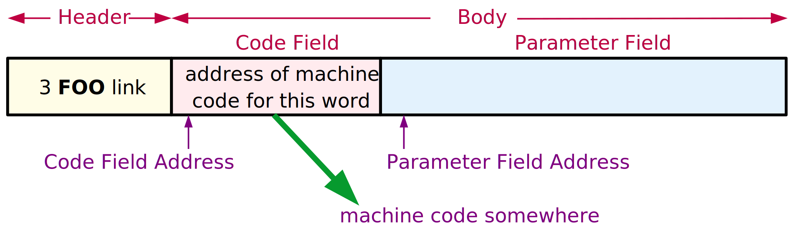
MACHINE-CODE ACTIONS
Forth CONSTANTs are probably the simplest example of a machine-code action. Let's consider some good Francophone constants
1 CONSTANT UN
2 CONSTANT DEUX
3 CONSTANT TROIS
Executing the word UN will push the value 1 onto the Forth Parameter Stack. Executing DEUX will push a 2 onto the stack, and so on. (Don't confuse Parameter Stack with Parameter Field; they are entirely separate.)
In the Forth kernel there is a single word called CONSTANT. This is not a constant-type word itself; it is a high-level Forth definition. CONSTANT is a "defining word": it creates new words in the Forth dictionary. Here we create the new "constant-type" words UN, DEUX, and TROIS. (You may think of these as "instances" of the "class" CONSTANT.) These three words will have their Code Fields pointing to a machine code fragment that does the action of CONSTANT.
What must this code fragment do? Figure 2 shows the memory representation of the three constants. All three words point to a common action routine. The difference in the words is entirely contained in their Parameter Fields, which, in this case, simply hold the constant values ("instance variables" in object lingo). So, the action of these three words should be fetch the contents of the Parameter Field, and push this onto the stack. The code understands implicitly that the parameter field contains a single-cell value.
Figure 2. Three constants
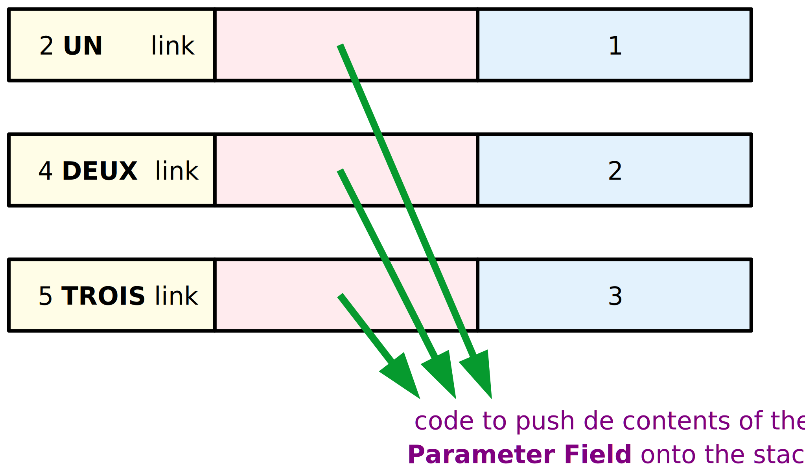
To write a machine-code fragment to do this, we need to know how to find the Parameter Field Address, after the Forth interpreter jumps to the machine code. That is, how is the PFA passed to the machine-code routine? This, in turn, depends on how the Forth interpreter NEXT has been coded, which varies from implementation to implementation. To write machine-code actions, we must understand NEXT.
The ITC NEXT was described in pseudo-code in Part 1. Here's one implementation for the 6809, using Y=IP and X=W:
NEXT: LDX ,Y++ ; (IP) -> W, and IP+2 -> IP
JMP [,X] ; (W) -> temp, JMP (temp)
Suppose that we're in a high-level thread
... SWAP DEUX + ...
with the Interpreter Pointer (IP) pointing to the DEUX "instruction," when NEXT is executed. (This would be at the very end of SWAP.) Figure 3 illustrates what happens. IP (register Y) is pointing within the high-level thread, at a memory cell that contains the address of the Forth word DEUX. To be precise, this cell contains the Code Field Address of DEUX. So, when we fetch a cell using Y, and auto increment Y, we fetch the Code Field Address of DEUX. This goes into W (register X), so W is now pointing to the Code Field. The contents of this field is the address of some machine code. We can fetch the contents of this cell and jump to the machine code with a single 6809 instruction. This leaves register X unchanged, so W is still pointing to the CFA of DEUX. This is how the Parameter Field Address is obtained, since, in this case, it is simply two bytes past the Code Field.
Figure 3. ITC Before and After
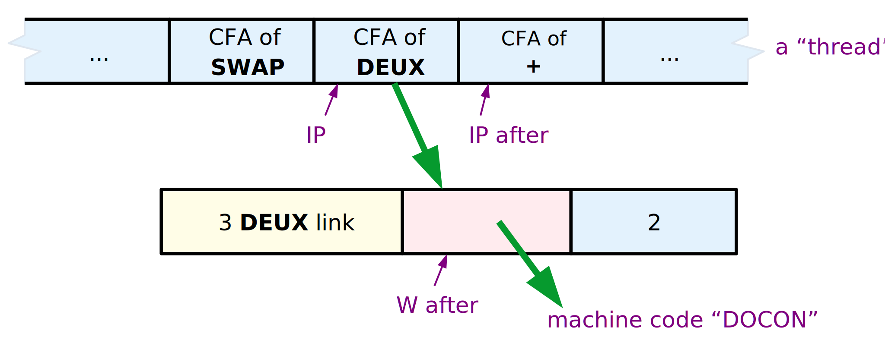
So, the machine code fragment has only to add 2 to W, fetch the cell value at that address, and push that on the stack. This fragment is frequently called DOCON:
DOCON: LDD 2,X ; fetch the cell at W+2
PSHU D ; push that on the Parameter Stack
NEXT ; (macro) do the next high-level word
(For this example, TOS is kept in memory.) Note that the previous NEXT incremented IP by 2, so it is already pointing to the next cell in the thread ("CFA of +") when DOCON does NEXT.
In general, ITC Forths leave the Parameter Field Address or some "nearby" address in the W register. In this case, W contained the CFA, which in this Forth implementation is always PFA-2. Since every class of Forth word except CODE words needs to use the Parameter Field Address, many implementations of NEXT will increment W to leave it pointing to the PFA. We can do this on the 6809 with one small change:
NEXT: LDX ,Y++ ; (IP) -> W, and IP+2 -> IP
JMP [,X++] ; (W) -> temp, JMP (temp), W+2 -> W
This adds three clock cycles to NEXT, and leaves the Parameter Field Address in W. What does it do to the Code Field routines?
| W=CFA | W=PFA |
|---|---|
DOCON: LDD 2,X (6)
PSHU D
NEXT | LDD ,X (5) PSHU D NEXT |
In exchange for a three-cycle penalty in NEXT, the DOCON code is reduced by one clock cycle, DOVAR by five cycles, and ENTER by one cycle. CODE words don't use the value in W, so they gain nothing from the auto increment. The speed gained or lost is determined by the mix of Forth words executed. The usual rule is that most of the words executed are CODE words, thus, incrementing W in NEXT costs a bit of speed overall. (There is a memory savings, but DOCON, DOVAR, and ENTER appear only once, making this gain slight.)
The best decision, of course, depends upon the processor. On machines like the Z80, which only access memory by bytes and don't have auto increment address modes, it is often best to leave W pointing to IP+1 (the last byte fetched from the Code Field). On other machines, auto incrementing is "free," and leaving W pointing to the Parameter Field is most convenient.
Remember: the decision must be made consistently. If NEXT leaves W pointing to the PFA of the word being executed, then EXECUTE must do likewise! (This was the 'oops' that I corrected at the start of this article.)
Direct Threading
Direct Threading works just like Indirect Threading, except that instead of the Code Field containing the address of some machine code, it contains a JUMP or CALL to some machine code. This makes the Code Field larger -- e.g., 1 byte larger in the 6809 -- but removes one level of indirection from the NEXT routine.
The choice of a JUMP or a CALL instruction in the Code Field hinges upon how the Parameter Field Address can be obtained by the machine code routine. In order to jump to the Code Field, many CPUs require that its address be in a register. For instance, the indirect jump on the 8086 is JMP AX (or some other register), and on the Z80 is JP (HL) (or IX or IY). On these processors, the DTC NEXT involves two operations, which on the 6809 would be:
NEXT: LDX ,Y++ ; (IP) -> W, and IP+2 -> IP
JMP ,X ; JMP (W)
(On the 8086, this can be done with LODSW, JMP AX.) The effect of this is illustrated in Figure 4 as "case 1". The Code Field Address of DEUX is fetched from the high-level thread, and IP is incremented. Then, instead of a fetch, a JUMP is made to the Code Field Address (i.e., the CPU jumps directly to the Code Field). The CFA is left in the W register, just like the first ITC example above. Since this address is already in a register, we can simply put a JUMP to DOCON in the Code Field, and the DOCON fragment will work the same as before.
Figure 4. DTC Before and After
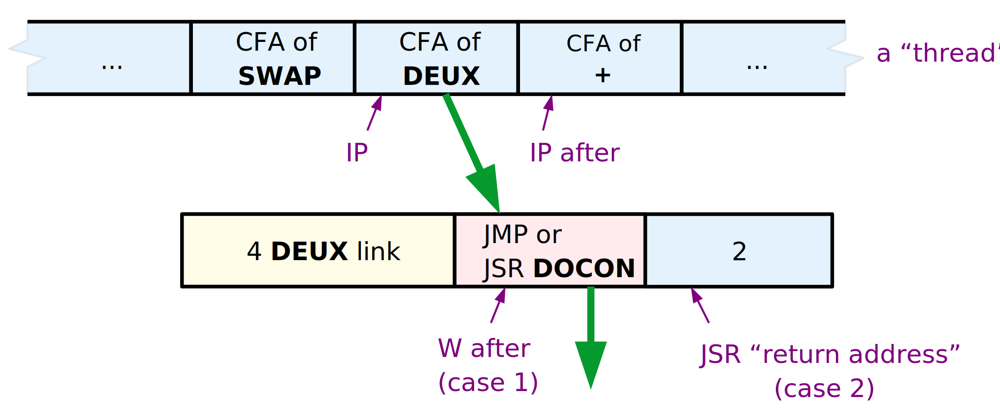
However, some processors -- such as the 6809 and PDP-11 -- can do this DTC NEXT in one instruction:
NEXT: JMP [,Y++] ; (IP) -> temp, IP+2 -> IP, JMP (temp)
This, too, will cause the CPU to jump to the Code Field of DEUX. But there's one big difference: the CFA is not left in any register! So how is the machine code fragment to find the Parameter Field Address? By putting a CALL (JSR) in the Code Field instead of a JUMP. On most CPUs, the CALL instruction will push the return address -- the address immediately following the CALL instruction -- onto the Return Stack. As Figure 4 illustrates ("case 2"), this return address is exactly the Parameter Field Address we want! So, all DOCON has to do is pop the Return Stack -- balancing the JSR in the Code Field -- and then use that address to fetch the constant value. Thus:
DOCON: PULS X ; pop the PFA from the Return Stack
LDD ,X ; fetch the Parameter Field cell
PSHU D ; push that on the Parameter Stack
NEXT ; (macro) do the next high-level word
Compare this with the ITC version. One instruction has been added to DOCON, but one instruction has been deleted from NEXT. DOVAR and NEXT likewise become one instruction longer:
DOVAR: PULS X ; pop the PFA of the word
PSHU X ; push that address on the Parameter Stack
NEXT
ENTER: PULS X ; pop the PFA of the word
PSHS Y ; push the old IP
TFR X,Y ; the PFA becomes the new IP
NEXT
Now go back to the beginning of this article, and reread my "oops," to see why we can't just re-fetch the CFA by using the IP. Also note the difference when the assignment of Forth's stack pointers to the 6809's U and S is reversed.
Subroutine Threading
Subroutine Threading (STC) is like DTC in that the CPU jumps directly to the Code Field of a Forth word. Only now there is no NEXT code, no IP register, and no W register. So, there is no choice but to use a JSR in the Code Field, since this is the only way to obtain the Parameter Field Address. This process is illustrated in Figure 5.
Figure 5. Subroutine Threaded Code
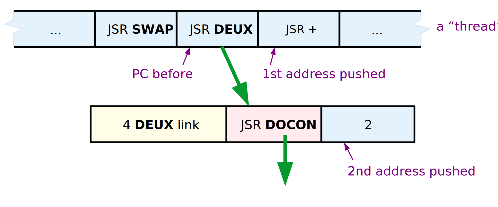
The high-level "thread" is a series of subroutine calls being executed by the CPU. When the JSR DEUX is executed, the address of the next instruction in the thread is pushed onto the Return Stack. Then, the JSR DOCON within the word DEUX is executed, which causes another return address -- the PFA of DEUX -- to be pushed onto the Return Stack. DOCON can pop that address, use it to fetch the constant, stack the constant, and then do an RTS to return to the thread:
DOCON: PULS X ; pop the PFA from the Return Stack
LDD ,X ; fetch the Parameter Field cell
PSHU D ; push that on the Parameter Stack
RTS ; do the next high-level word
We can still speak of a Code Field and a Parameter Field in Subroutine-Threaded Code. In every "class" of Forth word except CODE and colon definitions, the Code Field is the space occupied by a JSR or CALL instruction (just like DTC), and the Parameter Field is what follows. So, on the 6809, the PFA would equal CFA+3. The meaning of "Parameter Field" becomes somewhat fuzzy in CODE and colon definitions, as will be seen in future articles.
THE SPECIAL CASE: CODE WORDS
There is a significant exception to all of the above generalizations. This is CODE definitions -- Forth words that are defined as a machine code subroutine. This wonderful capability is trivially easy to implement in Forth, since every Forth word executes some piece of machine code!
The machine code comprising a CODE word is always contained in the body of the Forth word. In an Indirect-Threaded Forth, the Code Field must contain the address of the machine code to be executed. So the machine code is placed in the Parameter Field, and the Code Field contains the address of the Parameter Field, as shown in Figure 6.
Figure 6. Code Words
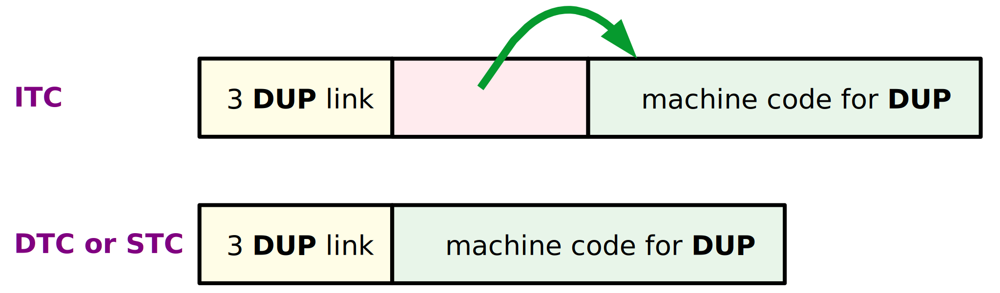
In Direct- and Subroutine-Threaded Forths, we could -- by analogy -- put, in the Code Field, a JUMP to the Parameter Field. But this would be pointless, since the Parameter Field immediately follows the Code Field! The Code Field could be filled with NOPs for the same result. Better still, the machine code could be started at the Code Field, and continued into the Parameter Field. At this point the distinction of "Code Field" and "Parameter Field" breaks down. This is no problem, because we don't need this distinction for CODE words. (This does have ramifications for decompilers and certain clever programming tricks, none of which concern us here.)
CODE words -- whatever the implementation -- are the one case where the machine code "action" routine does not need to be passed the Parameter Field address. The Parameter Field contains, not data, but the code being executed! Only NEXT needs to know this address (or the Code Field Address), so it can jump to the machine code.
USING ;CODE
Three questions remain unanswered:
a. how do we create a new Forth word that has some arbitrary data in its Parameter Field?
b. how do we change the Code Field of that word, to point to some machine code of our choosing?
c. how do we compile (assemble) this machine code fragment, which exists in isolation from the words using it?
The answer to (a) is: we write a Forth word to do this. Since this word, when executed, will define (create) a new word in the Forth dictionary, it is called a "defining word." CONSTANT is one example of a defining word. All of the "hard work" of a defining word is done by a kernel word, CREATE, which parses a name from the input stream, builds the header and Code Field for a new word, and links it into the dictionary. (In fig-Forth this word is called \<BUILDS.) All that remains for the programmer is to build the Parameter Field.
The answer to (b) and (c) is embodied in two convoluted words called (;CODE) and ;CODE respectively. To understand how they work, let's look at how the defining word CONSTANT is actually written in Forth. Using the original ITC 6809 example:
: CONSTANT ( n -- )
CREATE \ create the new word
, \ append the TOS value to the dictionary,
\ as the 1st cell of the Parameter Field
;CODE \ end high-level & start assembler code
LDD 2,X \ the code fragment DOCON
PSHU D \ " " " "
NEXT \ " " " "
END-CODE
There are two parts to this Forth word. Everything from : CONSTANT to ;CODE is the high-level Forth code executed when the word CONSTANT is invoked. Everything from ;CODE to END-CODE is machine code executed when the "children" of CONSTANT -- the "constant-class" words such as UN and DEUX -- are executed. That is, everything from ;CODE to END-CODE is the code fragment to which constant-type words will point. The name ;CODE signifies that it ends a high-level definition (";") and begins a machine- code definition ("CODE"). However, this is not put into the dictionary as two separate words. Everything from : CONSTANT to END-CODE is contained in the Parameter Field of CONSTANT, as shown in Figure 7.
Figure 7. ITC ;CODE
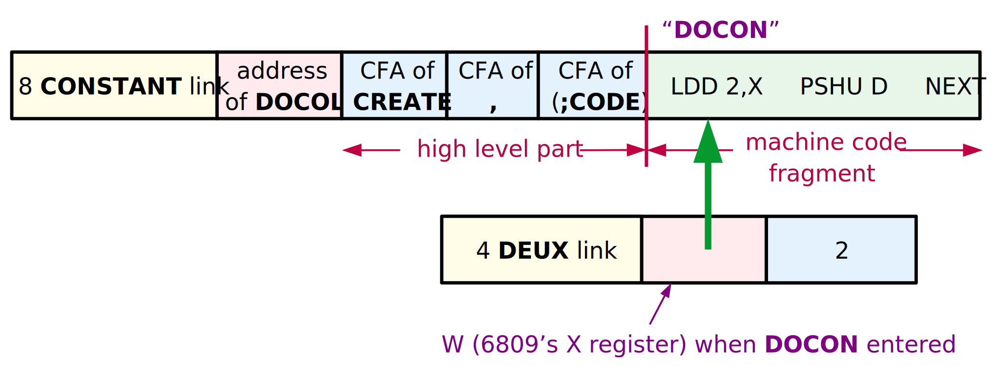
Derick and Baker [DER82] name three "sequences" that help to understand the action of defining words:
Sequence 1 is when the word CONSTANT is being defined. This involves both the high-level compiler (for the first part) and the Forth assembler (for the second part). This is when the definition of CONSTANT shown in Figure 7 is added to the dictionary. As we will see shortly, ;CODE -- a compiler directive -- is executed during Sequence 1.
Sequence 2 is when the word CONSTANT is being executed, and when some constant-type word is being defined. In the example
2 CONSTANT DEUX
Sequence 2 is when the word CONSTANT executes, and the word DEUX is added to the dictionary (as shown in Figure 7). During Sequence 2, the high-level part of CONSTANT is executed, including the word (;CODE).
Sequence 3 is when the constant-type word is executed. In our example, Sequence 3 is when DEUX is executed to push the value 2 onto the stack. This is when the machine-code part of CONSTANT is executed. (Recall that this fragment is the Code Field action of DEUX.)
The words ;CODE and (;CODE) do the following:
;CODE is executed during Sequence 1, when CONSTANT is compiled. This is an example of a Forth IMMEDIATE word -- a word executed during the Forth compilation. ;CODE does three things:
a. it compiles the Forth word (;CODE) into CONSTANT,
b. it turns off the Forth compiler, and
c. it turns on the Forth assembler.
(;CODE) is part of the word CONSTANT, so it executes when CONSTANT executes (Sequence 2). It performs the following actions:
a. It gets the address of the machine code that immediately follows. This is done by popping IP from the Forth Return Stack.
b. It puts that address into the Code Field of the word just defined by CREATE. The Forth word LAST (sometimes LATEST) gets the address of that word.
c. It does the action of EXIT (a.k.a. ;S) so that the Forth inner interpreter doesn't try to execute the machine code that follows as part of the Forth thread. This is the high-level "subroutine return" which ends a Forth thread.
F83 [LAX84] illustrates how these are typically coded in Forth:
: ;CODE
COMPILE (;CODE) \ compiles (;CODE) into definition
?CSP [COMPILE] [ \ turns off the Forth compiler
REVEAL \ (just like ";" does)
ASSEMBLER \ turns on the assembler
; IMMEDIATE \ this is an IMMEDIATE word!
: (;CODE)
R> \ pops the adrs of the machine code
LAST @ NAME> \ gets the CFA of the latest word
! \ stores the code address in the
; \ Code Field
(;CODE) is the more subtle of the two. Since it is a high-level Forth definition, the address following it in the CONSTANT thread -- the high-level "return address" -- is pushed onto Forth's Return Stack. So, popping the Return Stack while within (;CODE) will yield the address of the machine code that follows. Also, popping this value from the Return Stack will "bypass" one level of high-level subroutine return, so that when (;CODE) exits, it will exit to the caller of CONSTANT. This is equivalent to returning to CONSTANT, and then having CONSTANT return immediately. Use Figure 7 and walk through the execution of the words CONSTANT and (;CODE) to see how this works.
Direct and Subroutine Threading
For DTC and STC, the action of ;CODE and (;CODE) is identical to ITC, with one important exception: instead of holding an address, the Code Field holds a JUMP or CALL instruction. For an absolute JUMP or CALL, probably the only difference is that the address has to be stored at the end of the Code Field, as the operand of the JUMP or CALL instruction. In the case of the 6809, the address would be stored as the last two bytes of the three-byte JSR instruction. But some Forths, such as Pygmy Forth on the 8086, use a relative branch in the code field. In this case, the relative offset must be computed and inserted into the branch instruction.
HIGH-LEVEL FORTH ACTIONS
We have seen how to make a Forth word execute a chosen fragment of machine language code, and how to pass that fragment the address of the word's Parameter Field. But how do we write the "action routine" in high-level Forth?
Every Forth word must -- by the action of NEXT -- execute some machine language routine. This is what the Code Field is all about. Therefore, a machine language routine, or a set of routines, is needed to handle the problems of invoking a high- level action. We'll call this routine DODOES. There are three problems to be solved:
a. how do we find the address of the high-level action routine associated with this Forth word?
b. how do we, from machine code, invoke the Forth interpreter for a high-level action routine?
c. how do we pass that routine the address of the Parameter Field for the word we are executing?
The answer to (c) -- how do you pass an argument to a high-level Forth routine -- is easy. On the Parameter Stack, of course. Our machine language routine must push the Parameter Field Address on the stack before it invokes the high level routine. (From our previous work, we know how the machine language routine can obtain the PFA.)
The answer to (b) is a bit more difficult. Basically, we want to do something like the Forth word EXECUTE, which invokes a Forth word; or perhaps ENTER, which invokes a colon definition. Both are among our "key" kernel words. The DODOES code will resemble these.
Question (a) is the tricky one. Where to put the address of the high-level routine? Remember, the Code Field does not point to high-level code; it must point to machine code. Two approaches have been used in the past:
1. The fig-Forth solution
Fig-Forth reserved the first cell of the Parameter Field to hold the address of the high-level code. The DODOES routine then obtained the Parameter Field address, pushed the address of the actual data (typically PFA+2) onto the stack, fetched the address of the high-level routine, and EXECUTEd.
There were two problems with this approach. First, the structure of the Parameter Field was different for machine-code actions and high-level actions. For example, a CONSTANT defined with a machine code action would have its data stored at PFA, but a CONSTANT defined with a high-level action would have its data stored at (typically) PFA+2.
Second, every instance of a high-level-action class carried an additional overhead of one cell. That is, if CONSTANT used a high-level action, every constant defined in the program was one cell larger!
Fortunately, clever Forth programmers quickly devised a solution which overcame these problems, and the fig-Forth approach has fallen into disuse.
2. The modern solution
Most Forths nowadays associate a different machine language fragment with each high-level action routine. So, a high-level constant would have its Code Field pointing to a machine language fragment whose sole function is to invoke the high-level action of CONSTANT. A high-level variable's Code Field would point to the "startup" routine for the high-level VARIABLE action, and so on.
Is this excessive duplication of code? No, because each of these machine-language fragments is just a subroutine call to a common startup routine, DODOES. (This is different from the fig-Forth DODOES routine.) The address of the high-level code to DODOES is passed as an "inline" subroutine parameter. That is, the address of the high-level code is put immediately after the JSR/CALL instruction. DODOES can then pop the CPU stack and do a fetch to obtain this address.
Actually, we make two more simplifications. The high-level code itself is put immediately after the JSR/CALL instruction. Then DODOES pops the CPU stack, and obtains this address directly. And since we know this is high-level Forth code, we dispense with its Code Field and just compile the high-level thread...essentially incorporating the action of ENTER into DODOES.
Now each "defined" word just points to a bit of machine code...no space is consumed in its Parameter Field. This bit of machine code is a JSR or CALL instruction, followed by the high-level action routine. In the 6809 example, we have traded two bytes in every constant for a three-byte JSR that appears only once.
This is undoubtedly the most convoluted program logic in the entire Forth kernel! So, let's see how this is implemented in practice, using our trusty ITC 6809 example.
Figure 8. ITC DODOES
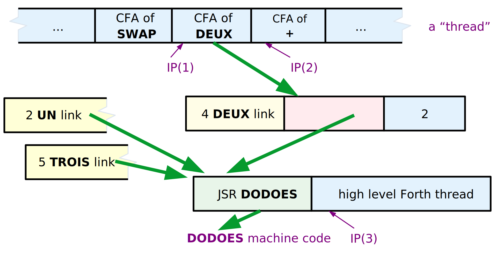
Figure 8 shows the constant DEUX implemented with a high-level action. When the Forth interpreter encounters DEUX -- that is, when the Forth IP is at IP(1) -- it does the usual thing: it fetches the address contained in DEUX's Code Field, and jumps to that address. At that address is a JSR DODOES instruction, so a second jump -- this time a subroutine call -- is immediately taken. DODOES must then perform the following actions:
a. Push the address of DEUX's Parameter Field onto the Parameter Stack, for later use by the high-level action routine. Since the JSR instruction does not alter any registers, we expect to find the Parameter Field Address of DEUX (or a "nearby" address) still in the W register.
b. Obtain the address of the high-level action routine, by popping the CPU stack. (Recall that popping the CPU stack will give the address of whatever immediately follows the JSR instruction.) This is a high-level thread, i.e., the Parameter Field part of a colon definition.
c. Save the old value of Forth's Instruction Pointer -- IP(2) -- on Forth's Return Stack, since the IP register will be used to execute the high-level fragment. Essentially, DODOES must "nest" the IP, just like ENTER does. Remember that Forth's Return Stack may not be the same as the CPU subroutine stack.
d. Put the address of the high-level thread into IP. This is IP(3) in Figure 8.
e. Do a NEXT to continue high-level interpretation at the new location.
Assume an indirect-threaded ITC 6809, and the following:
-
W is not incremented by NEXT (i.e., W will contain the CFA of the word entered by NEXT);
-
the 6809 S is Forth's PSP, and U is Forth's RSP (i.e., the CPU stack is not Forth's Return Stack);
-
the 6809 Y is Forth's IP, and X is Forth's W.
Recall the definition of NEXT for these conditions:
NEXT: LDX ,Y++ ; (IP) -> W, and IP+2 -> IP
JMP [,X] ; (W) -> temp, JMP (temp)
DODOES can be written as follows:
DODOES: LEAX 2,X ; make W point to the Parameter Field
PSHU Y ; (c) push old IP onto the Return Stack
PULS Y ; (b,d) pop new IP from the CPU stack
PSHS X ; (a) push W (the Parameter Field
; Address) onto the Parameter Stack
NEXT ; (e) invoke high-level interpreter
These operations are slightly out of sequence. As long as the right things go onto the right stacks (or into the right registers) at the right time, the exact order of operations is not critical. In this case, we're taking advantage of the fact that the old IP can be pushed onto Forth's Return Stack before the new IP is popped from the CPU stack.
On some processors the CPU stack is used as Forth's Return Stack. In this case, one step involving temporary storage is necessary. If we had chosen S=RSP and U=PSP above, DODOES would be:
DODOES: LEAX 2,X ; make W point to the Parameter Field
PSHU X ; (a) push W (the Parameter Field
; Address) onto the Parameter Stack
PULS X ; (b) pop thread address from CPU stack
PSHS Y ; (c) push old IP onto the Return Stack
TFR X,Y ; (d) put thread address into IP
NEXT ; (e) invoke high-level interpreter
Since we are essentially swapping the top of the Return/CPU stack with IP, we need to use X as a temporary holding register. Thus we must push the PFA -- step (a) -- before re-using the X register.
Walk through both of these DODOES examples step by step, and track the contents of the registers and the two stacks. I always walk through my DODOES routine, just to make sure I'm not clobbering a register at the wrong time.
Direct Threading
The logic of DODOES is the same in DTC Forths. But the implementation may be different, depending on whether the DTC Forth uses a JMP or a CALL in the Code Field of a word.
a. JMP in Code Field. A DTC Forth can use a JMP in the Code Field if the address of the word being executed is found in a register. This will most likely be the Code Field Address.
From the point of view of DODOES, this is identical to ITC. In our example, DODOES sees that the Forth interpreter jumps to the machine code associated with DEUX, and that code is a JSR to DODOES. It doesn't matter that the first jump is now a direct jump rather than an indirect jump; the register and stack contents are the same. So, the code for DODOES will be identical to that for ITC. (Of course, NEXT is different, and W may need a different offset to point to the Parameter Field.)
b. CALL/JSR in Code Field. In the DTC 6809, we never explicitly fetch the CFA of the word being executed, so the Forth word must contain a JSR in its Code Field. Instead of finding the Parameter Field Address of the Forth word in a register, we find it on the CPU stack.
Figure 9. DTC DODOES
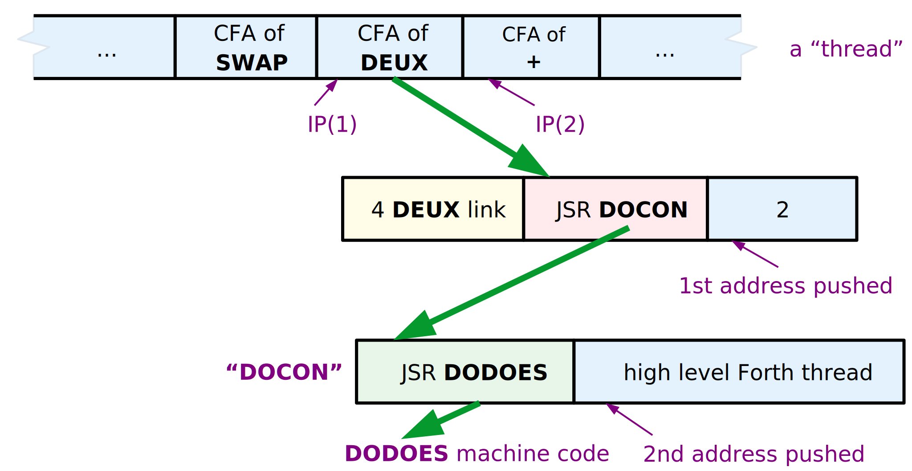
The DEUX example in this case is shown in Figure 9. When the Forth IP is at IP(1), the Forth interpreter jumps to the Code Field of DEUX (and increments IP). In the Code Field is a JSR to DEUX's machine code fragment. At that address is a second JSR, to DODOES. So two things get pushed onto the CPU stack. The return address of the first JSR is the Parameter Field address of DEUX. The return address of the second JSR -- and thus topmost on the CPU stack -- is the address of the high-level thread to be executed. DODOES must ensure that the old IP is pushed onto the Return Stack, the PFA of DEUX is pushed onto the Parameter Stack, and the address of the high-level thread is loaded into IP. This is very sensitive to stack assignments! For S=PSP (CPU stack) and U=RSP, the NEXT and DODOES code is:
NEXT: LDX [,Y++] ; (IP) -> temp, IP+2 -> IP, JMP (temp)
DODOES: PSHU Y ; push old IP onto the Return Stack
PULS Y ; pop new IP from the CPU stack
; note: the CPU stack is the Parameter Stack, and the
; topmost element is now the PFA of the word...
; exactly what we want!
NEXT ; invoke high-level interpreter
Check for yourself that the flow through NEXT, DEUX, and DODOES pushes a net total of one item -- the PFA of DEUX -- onto the Parameter Stack!
Subroutine Threading
In STC Forths, there are no IP or W registers, and a high-level "thread" is pure machine code (a series of subroutine calls). The only difference between a high-level action and a ;CODE action is that the PFA of the "defined" word must be pushed onto the Parameter Stack. "Defined" words have a CALL/JSR in the Code Field, and the CPU stack must be Forth's Return Stack, so DODOES is mostly a matter of stack manipulations.
Figure 10. STC DODOES
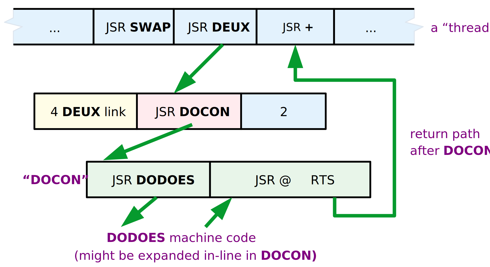
Figure 10 shows a 6809 STC example of DEUX with a high-level action. By the time DODOES is entered, three things have been pushed onto the CPU/Return Stack: the return address in the "main" thread, the PFA of DEUX, and the address of DEUX's high-level action code. DODOES must pop the last two, push the PFA onto the Parameter Stack, and jump to the action code:
DODOES: PULS X,Y ; action code adrs -> X, PFA -> Y
PSHU Y ; push PFA onto Parameter Stack
JMP ,X ; jump to the action code
DODOES for the 6809 is now a three-instruction routine. It can be simplified even further by "expanding JSR DODOES in-line", i.e., replacing the JSR DODOES with the equivalent machine code instructions. Since there's one less JSR, this simplifies the stack manipulation to:
PULS X ; pop PFA from CPU stack
PSHU X ; and push it onto the Parameter Stack
...high level thread for DEUX...
This replaces a three-byte JSR with four bytes of explicit code, with a considerable improvement in speed. For the 6809 this would probably be a good choice. For a processor like the 8051, DODOES is long enough that it should be kept as a subroutine.
USING DOES>
We learned with ;CODE how to create a new Forth word with arbitrary data in its parameter field, and how to make that word's Code Field point to a new machine code fragment. How do we compile a high-level action routine, and make a new word point to it?
The answer lies in the two words DOES> and (DOES>), which are the high-level equivalents of ;CODE and (;CODE). To understand them, let's look at an example of their use:
: CONSTANT ( n -- )
CREATE \ create the new word
, \ append the TOS value to the dictionary,
\ as the 1st cell of the Parameter Field
DOES> \ end "create" part & start "action" part
@ \ given the PFA, fetch its contents
;
Compare this with the previous ;CODE example, and observe that DOES> performs a function analogous to ;CODE. Everything from : CONSTANT to DOES> is executed when the word CONSTANT is invoked. This is the code which builds the Parameter Field of the "defined" word. Everything from DOES> to ; is the high-level code executed when the "children" of CONSTANT (such as DEUX) are invoked, i.e., the high-level fragment to which the Code Field will point. (We'll see that a JSR DODOES is included before this high-level fragment.) Just as with ;CODE, both the "create" and the "action" clauses are contained within the body of the Forth word CONSTANT, as shown in Figure 11.
Figure 11. ITC DOES>
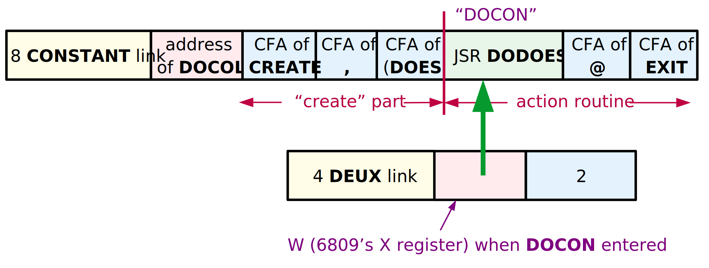
Recall Sequence 1, 2, and 3. The words DOES> and (DOES>) do the following:
DOES> is executed during Sequence 1, when CONSTANT is compiled. Thus DOES> is a Forth IMMEDIATE word. It does two things:
a. It compiles the Forth word (DOES>) into CONSTANT.
b. It compiles a JSR DODOES into CONSTANT.
Note that DOES> leaves the Forth compiler running, in order to compile the high-level fragment which follows. Also, even though JSR DODOES is not itself Forth code, an IMMEDIATE word such as DOES> can cause it to be compiled in the middle of Forth code.
(DOES>) is part of the word CONSTANT, so it executes when CONSTANT executes (Sequence 2). It does the following:
a. It gets the address of the machine code that immediately follows (JSR DODOES), by popping IP from the Forth Return Stack.
b. It puts that address into the Code Field of the word just defined by CREATE.
c. It performs the action of EXIT, causing CONSTANT to terminate here and not attempt to execute the fragment that follows.
The action of (DOES>) is identical to (;CODE)! A separate word is not strictly required. F83, for example, uses (;CODE) in both ;CODE and DOES>. I'll use (;CODE) from now on instead of (DOES>).
You've already seen the workings of (;CODE). The F83 definition of DOES> is
: DOES>
COMPILE (;CODE) \ compiles (;CODE) into definition
0E8 C, \ the CALL opcode byte
DODOES HERE 2+ - , \ the relative offset to DODOES
; IMMEDIATE
where DODOES is a constant which holds the address of the DODOES routine. (The actual F83 source code is slightly different, due to the requirements of the F83 metacompiler.) DOES> need not fiddle with CSP or the smudge bit, since the Forth compiler is left "on." In the case of the 8086, the CALL instruction expects a relative address...hence the arithmetic involving DODOES and HERE. In the 6809, DOES> would look like
: DOES>
COMPILE (;CODE) \ compiles (;CODE) into definition
0BD C, \ the JSR Extended opcode byte
DODOES , \ the operand: address of DODOES
; IMMEDIATE
You can see here how the machine language JSR DODOES is compiled after the high-level (;CODE), and before the high-level "action" code.
Direct and Subroutine Threading
The only difference in DTC and STC is how the Code Field is fiddled to point to a new routine. This is done by (;CODE), and the required changes have already been described. DOES> isn't affected at all, unless you're writing an STC Forth and expanding the JSR DODOES to explicit machine code. In this case, DOES> is modified to assemble the "in-line" machine code instead of a JSR DODOES instruction.
ONWARD AND UPWARD
Who would have thought that so few lines of code would require so much explanation? This is why I admire ;CODE and DOES> so much...I've never before seen seen such intricate, powerful, and flexible constructs coded with such economy.
In the next installment I'll discuss the merits of assemblers vs. metacompilers, and provide the actual CODE definitions for our Forth example systems.
REFERENCES
[DER82] Derick, Mitch and Baker, Linda, Forth Encyclopedia, Mountain View Press (1982). A word-by-word description of fig-Forth in minute detail. Still available from the Forth Interest Group, P.O. Box 2154, Oakland CA 94621.
[LAX84] Laxen, H. and Perry, M., F83 for the IBM PC, version 2.1.0 (1984). Distributed by the authors, available from the Forth Interest Group or GEnie.
Author's note for web publication: the files formerly available on the GEnie online service are now available from the Forth Interest Group FTP server, ftp://ftp.forth.org/pub/Forth.